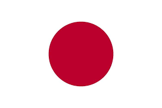
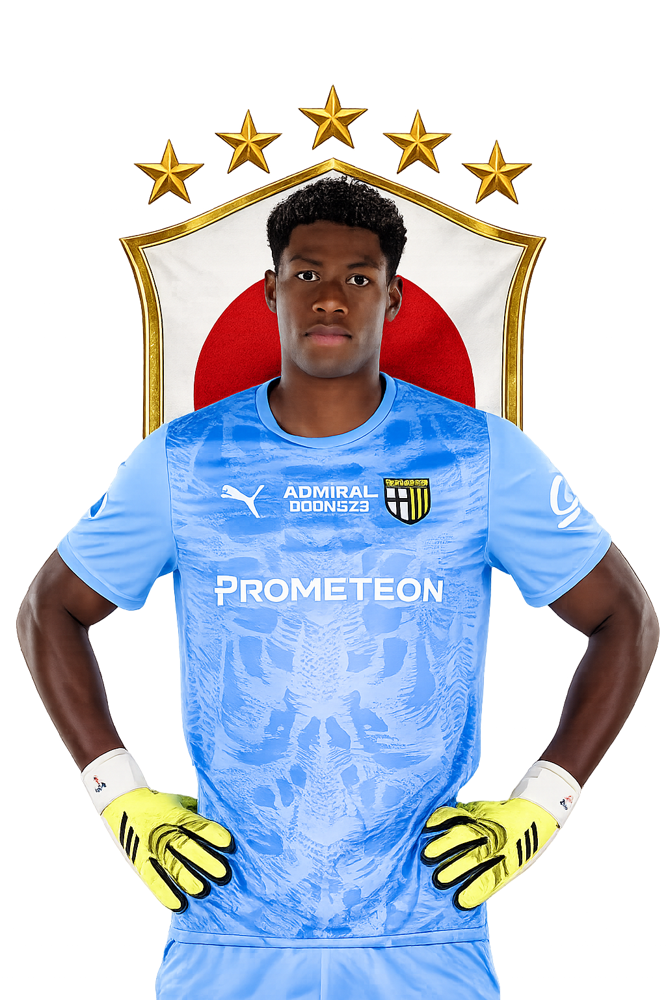
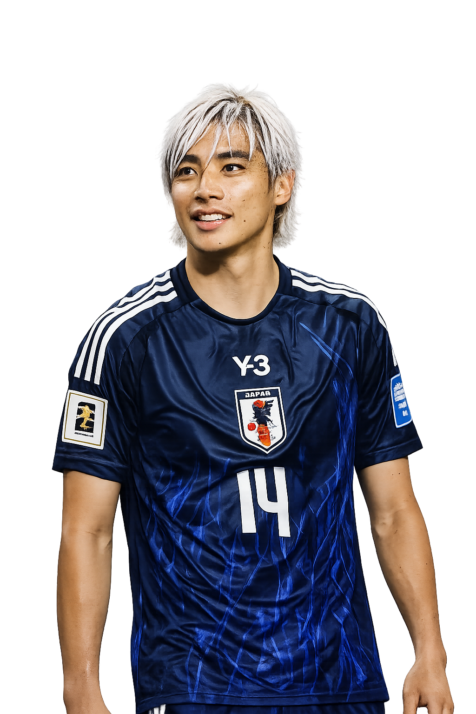
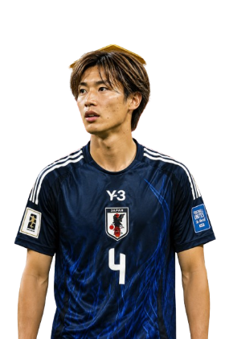
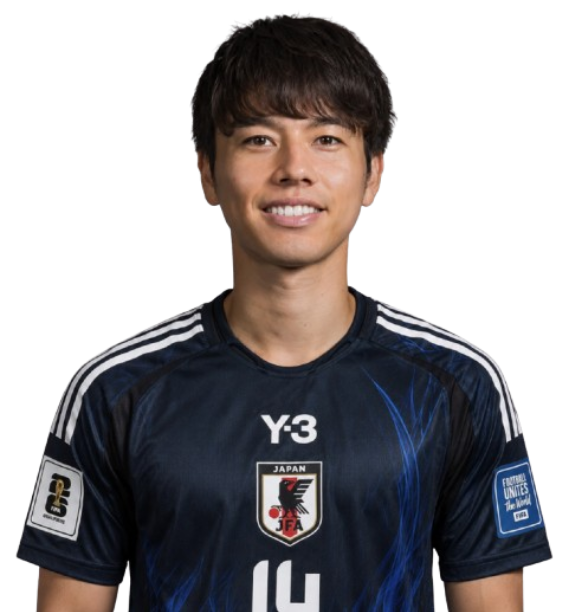
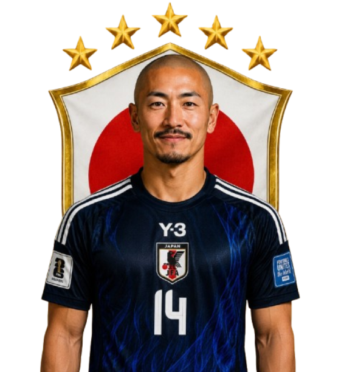

WE ARE JAPAN

Japan Football Association

1
ZION SUZUKI
Goleiro
Jap 2
TOMOKI HAYAKAWA

14
JUNYA ITO
Ponta
Jap 4
YUTO NAGATOMO
Jap 5
WATARU ENDO
Jap 6
DAICHI KAMADA
Jap 7
TAKEHIRO TOMIYASU

4
KO ITAKURA
Zagueiro
Jap 9
RITSU DOÃN
Jap 10
TAKEFUSA KUBO
Jap 11
AYASE UEDA
Jap 12
AYUMU SEKO
Jap 13
TSUYOSHI WATANABE

17
AO-TANAKA
Meio-campo

11
DAIZEN MAEDA
Atacante